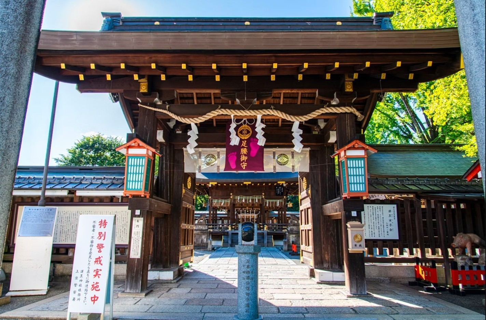

Mengenal Otera, Jinja, dan Matsuri
Bekal budaya sebelum hidup dan bekerja di Jepang: apa beda kuil Buddha dan kuil Shinto, cara berdoa yang benar, serta makna festival dan omikoshi.
Kuil dan festival menyatu dalam keseharian Jepang. Mengetahui bedanya adalah bentuk hormat kepada warga sekitar tempat kita tinggal.
Apa beda Otera dan Jinja?
| お寺 · Otera | |
|---|---|
| Agama | Buddha, masuk ke Jepang lewat Tiongkok dan Korea. |
| Yang dipuja | Patung Buddha dan bodhisattva di dalam aula utama. |
| Gerbang | Sanmon, gerbang kuil bertingkat dan berpintu. |
| Akhiran nama | -ji, -dera, -in (Kiyomizu-dera, Sensō-ji) |
| Pemuka | Biksu (osho / obōsan), umumnya berkepala plontos. |
| Ciri khas | Lonceng besar, dupa, pagoda, dan sering ada pemakaman. |
| Pemakaman | Biasa mengurus upacara kematian dan makam. |
| Perayaan | Hanamatsuri, Obon, lonceng malam tahun baru. |

Klik untuk unggah foto| 神社 · Jinja | |
|---|---|
| Agama | Shinto, kepercayaan asli Jepang. |
| Yang dipuja | Kami (roh alam, leluhur, tokoh) yang bersemayam di honden. |
| Gerbang | Torii, dua tiang dengan palang di atas. |
| Akhiran nama | -jinja, -gū, -taisha (Meiji Jingū, Izumo Taisha) |
| Pemuka | Kannushi (pendeta) dan miko (gadis kuil) berbaju putih-merah. |
| Ciri khas | Tali shimenawa, patung komainu, dan tempat bersuci temizuya. |
| Pemakaman | Tidak ada makam; kematian dianggap kotor secara ritual. |
| Perayaan | Festival tahunan, Shichi-Go-San, hatsumōde, pernikahan. |
Tata cara berdoa yang berbeda
Di Otera
Membungkuk sekali di depan sanmon sebelum masuk.
Bersuci dengan air di chōzuya jika tersedia.
Memasukkan koin ke kotak saisen.
Mengatupkan tangan di dada dan berdoa dalam hati, tanpa suara tepukan.
Di Jinja
Membungkuk di depan torii, lalu berjalan di sisi jalan setapak, bukan di tengah.
Bersuci di temizuya: tangan kiri, tangan kanan, lalu mulut.
Koin masuk kotak, lalu membungkuk dalam sebanyak dua kali.
Bertepuk dua kali, berdoa, dan menutup dengan satu bungkukan.
Apa itu Matsuri?
Matsuri (祭り) adalah festival untuk berterima kasih kepada kami dan memohon panen berlimpah, kesehatan, dan kedamaian warga. Sebagian besar berasal dari kuil Shinto, tetapi ada juga yang berakar dari Buddha seperti Obon dan Hanamatsuri.
Di seluruh Jepang ada puluhan ribu festival, dan warga bergotong royong menyiapkannya sesuai musim. Banyak yang terbuka untuk orang asing, jadi ini kesempatan baik untuk berbaur dengan lingkungan.
- TujuanSyukur dan permohonan kepada kami, serta mempererat warga.
- Isi acaraOmikoshi, dashi (kereta hias), tarian bon odori, dan kios makanan (yatai).
- Contoh terkenalGion Matsuri (Kyoto), Sanja Matsuri (Tokyo), Tenjin Matsuri (Osaka).
 Klik untuk unggah foto
Klik untuk unggah foto
 Klik untuk unggah foto
Klik untuk unggah fotoYatai
Deretan kios takoyaki, yakisoba, dan jajanan lain di sepanjang jalan festival.
 Klik untuk unggah foto
Klik untuk unggah fotoDashi
Kereta hias besar yang ditarik keliling kota, seperti yamaboko di Gion Matsuri.
 Klik untuk unggah foto
Klik untuk unggah fotoBon Odori
Tarian melingkar musim panas saat Obon, yang berakar dari tradisi Buddha.
Apa itu Omikoshi?
Omikoshi (神輿) adalah "kuil Shinto mini yang bisa dipikul", tempat kami berpindah sementara. Menurut kepercayaan, pada hari festival kami turun dari honden ke omikoshi lalu berkeliling kampung untuk memberkati warga.
Para pemikul berseru "Wasshoi, wasshoi!" sambil mengguncang omikoshi. Semakin kuat diguncang, semakin besar tenaga kami dan keberuntungan bagi para pemikul.
- Puncak atapSering dihiasi burung phoenix (hōō) berwarna emas.
- Cara memikulPuluhan orang memikul di bahu sambil berarak keliling kota.
- Ikut sertaDaftar lewat komunitas setempat dan mengenakan happi.
- EtikaJangan menyentuh omikoshi sembarangan dan hormati aba-abanya.
 Klik untuk unggah foto
Klik untuk unggah foto
Siap belajar lebih jauh tentang hidup di Jepang?
Pembelajaran budaya dan etika adalah bagian dari program pelatihan kami. Silakan konsultasi kapan saja.
Isi Formulir Pendaftaran